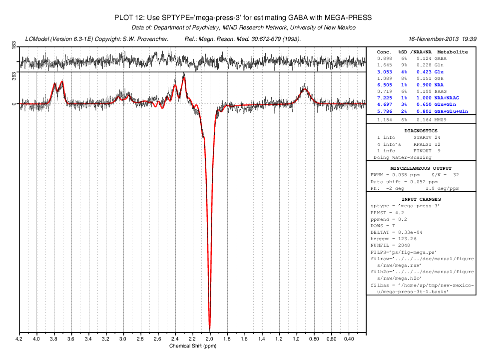

MEGA-PRESS: Frequent artifacts below 1.95 ppm (not present above) can be avoided by using PPMEND=1.95
Back to
LCModel's home page
Contact: Stephen Provencher:
sp@lcmodel.CA
Last modified: 18 November 2016